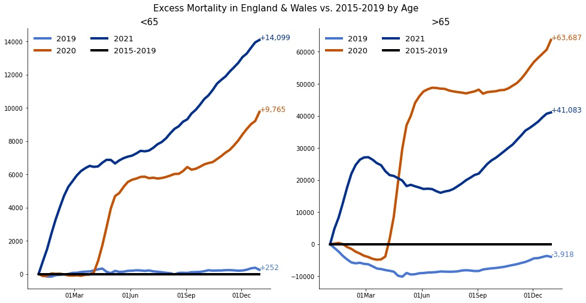

.
.
ONS Mortality Data Analysis for years 2020 and 2021: the UK ONS data count the deaths in England and Wales by
age group precising if Covid is the cause of the death.
Source
The data source is ons.gov.uk
.
In short
The first graphs show a significant excess-mortality in England and Wales in 2020 (left) and 2021 (right):
In the second set of graphs, we take the excess mortality and we retranch the number of covid deaths. Then we break it down between youngs & adults (<65) and elders (>65)
We then highlight 2 different phenomenons for each age group:
The first graphs show a significant excess-mortality in England and Wales in 2020 (left) and 2021 (right):
- 2020: +73k extra mortality for 78k declared covid deaths
- 2021: +54k extra mortality for 76k declared covid deaths
In the second set of graphs, we take the excess mortality and we retranch the number of covid deaths. Then we break it down between youngs & adults (<65) and elders (>65)
We then highlight 2 different phenomenons for each age group:
- Right graphic: Over 65 (>65) deaths attributed to Covid may have been largely over stated (by 25k in
2021 and 6k in
2020).
Said differently,
More than one third (25k on 60k deaths of persons >65) of the said Covid deaths in 2021 died with Covid rather than of Covid. - Left graphic: Under 65 (<65) endured a steady extra mortality NOT attributable to Covid.
The side effects (lockdown, poor access to healthcare,etc.) of the Covid crisis management on the under 65 look significant. All in all, it's around
2,000 extra deaths in 2020 and 2021we observed for the young & adult (<65).
Excess mortality in 2020 and 2021 and Covid deaths
Excess mortality of the <65 (left) and>65 (right) in 2020 and 2021 after retranching Covid deaths
Excess mortality of the <65 (left) and>65 (right) in 2020 and 2021 after retranching Covid deaths

I. The 2021, the Covid death count exceeded observed ex. mortality
The first graph represent the extra mortality in 2019, 2020 and 2021.
2020 and 2021 led to approx 73k and 55k extra deaths respectively.
As shows in the two bottom graphs,
In a sense, the 2021 the 76k Covid deaths may have been largely amplified. The difference stands between covid deaths and excess mortality stand at 21k in 2021 and 5k in 2020. A finer analysis by age group (see below), showed that this phenomenon is concentrated in the elders, and that these numbers are probably closer to 24k in 2021 and 6k in 2020.
More than one third (24k on 65k) of the said Covid deaths of elders (>65) in 2021 are probably patients dying of an other cause than Covid but on who were positive to Covid. They died with covid rather than of Covid.
2020 and 2021 led to approx 73k and 55k extra deaths respectively.
As shows in the two bottom graphs,
- the 2020 extra mortality (73k deaths) is remarkably in line with the 78k Covid deaths.
- in 2021, on the contrary,the 76k Covid stated deaths outpaced significantly the extra mortality. In 2021 people surprisingly and numerously died less of other causes.
- Harvesting effect: very frail people who would have died of something else this year but instead died of Covid last year. Not very plausible.
- A more plausible explanation, is that people have still died from traditional causes but they were stamped
as Covid.
Many said "Covid deaths" are people who died with Covid rather than of Covid.
Many of these would have died even if Covid had not spread around the world.
In a sense, the 2021 the 76k Covid deaths may have been largely amplified. The difference stands between covid deaths and excess mortality stand at 21k in 2021 and 5k in 2020. A finer analysis by age group (see below), showed that this phenomenon is concentrated in the elders, and that these numbers are probably closer to 24k in 2021 and 6k in 2020.
More than one third (24k on 65k) of the said Covid deaths of elders (>65) in 2021 are probably patients dying of an other cause than Covid but on who were positive to Covid. They died with covid rather than of Covid.
II. The Young generation sacrifice
Point 1:

Point 3:
- the younger (<65)< /b> have experienced a steady extra mortality:
+2242 unexplained extra deaths in 2020 and in 2021, say 6 "young" persons
every day have died from unexplained reason.
Understanding the reasons of this is critical, maybe worth exploring:
- lockdown side effects on young adults such as depression due to lack of social relation, lack of exercise, deterioration of global health levels.
- NHS failure to provide a satisfying treatment. Health care is simply not as accessible as it was and much treatment has been missed or has not gone well. Everyone involved in cancer has been very gloomy about this, for example.
- Vaccinations fatalities? To close that door, it would be useful the the government publish the breakdown of the almost 2000 reported suspected deaths caused by vaccination by age group, to measure how it affects the <65.
- the elder (>65) have experienced a negative extra mortality, suggesting that a significant part of these deaths (25k on 63k so said Covid deaths) may be also related to other causes than Covid (see part I above).